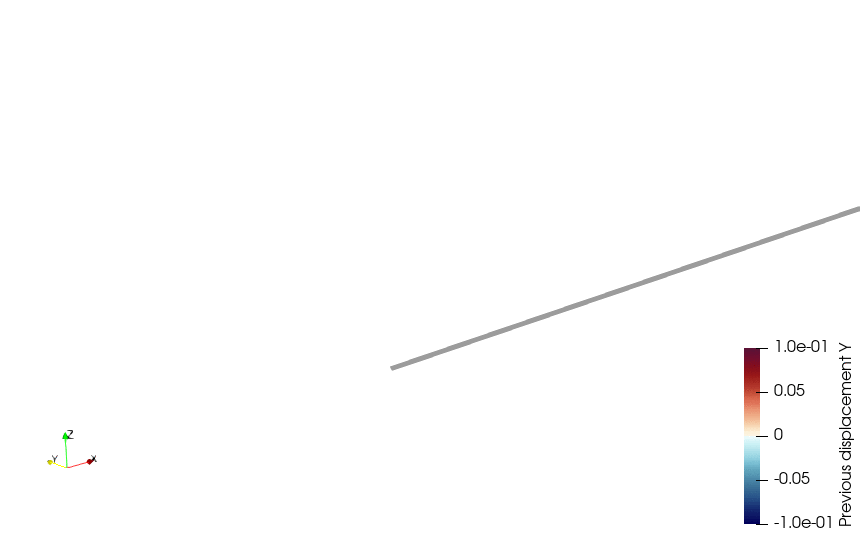

Nonlinear beam model in finite rotations #
Objectives
We show how to formulate and solve a 3D nonlinear beam model in large displacements and rotations. We however consider here slender structures for which local strains will remain small. We therefore adopt an infinitesimal strain linear elastic model. The main difficulty here is related to the fact that finite rotations cannot be described using a simple rotation vector as in the infinitesimal rotation case but must be handled through rotation matrices.
Download sources
See also
This tour expands upon the work of [Morandini, 2017]. Contrary to this implementation which required in-depth implementations of conditional UFL expression and custom assembly procedure, we adopt a slightly different discretization strategy which alleviates the problem encountered in this previous implementation.
The following animation illustrates how an initially horizontal beam, subject to a concentrated moment and horizontal transversal force, rolls up on itself several times. Note here that self-contact is not taken into account.\(\newcommand{\bA}{\boldsymbol{A}} \newcommand{\bR}{\boldsymbol{R}} \newcommand{\bG}{\boldsymbol{G}} \newcommand{\bH}{\boldsymbol{H}} \newcommand{\br}{\boldsymbol{r}} \newcommand{\ba}{\boldsymbol{a}} \newcommand{\bb}{\boldsymbol{b}} \newcommand{\bu}{\boldsymbol{u}} \newcommand{\bg}{\boldsymbol{g}} \newcommand{\be}{\boldsymbol{e}} \newcommand{\bN}{\boldsymbol{N}} \newcommand{\bP}{\boldsymbol{P}} \newcommand{\bM}{\boldsymbol{M}} \newcommand{\bC}{\boldsymbol{C}} \newcommand{\bR}{\boldsymbol{R}} \newcommand{\bI}{\boldsymbol{I}} \newcommand{\T}{^\text{T}} \newcommand{\btheta}{\boldsymbol{\theta}} \newcommand{\bvartheta}{\boldsymbol{\vartheta}} \newcommand{\bXi}{\boldsymbol{\Xi}} \newcommand{\bTheta}{\boldsymbol{\Theta}} \newcommand{\bepsilon}{\boldsymbol{\epsilon}} \newcommand{\bchi}{\boldsymbol{\chi}} \newcommand{\bOmega}{\boldsymbol{\Omega}} \newcommand{\bomega}{\boldsymbol{\omega}} \newcommand{\axial}{\operatorname{axial}} \renewcommand{\skew}{\operatorname{skew}} \newcommand{\dx}{\,\text{dx}}\)
{kind=link}
Handling finite rotations#
Choosing a parametrization#
Handling finite rotations is a difficult point in a finite-element context as these should be described through rotation matrices \(\bR\) belonging to the special orthogonal group \(SO(3)\) i.e. such that \(\bR\T\bR=\bI\) and \(\det\bR=1\). It is however not possible to easily interpolate elements of this group using standard finite-element techniques. Various approaches therefore attempt to parametrize elements of this group such as:
vectorial parametrizations
Euler-angle parametrizations
quaternion parametrizations
cosine direction parametrizations…
In all of these methods, a rotation matrix is parametrized by a finite set of parameters: e.g. 3 for vectorial and Euler angle parametrizations, 4 for quaternion parametrizations, 9 for cosine direction, etc. Each of these methods will have some sort of singularity in the parametrization as the mapping can never be bijective. As a result, all methods possess some advantages and some drawbacks, either on the theoretical or computational point of view.
In this tour, we make use of vectorial parametrizations which have the advantage of being based on a parameter, namely the rotation vector \(\btheta\), which behaves as a Cartesian 3D vector. We refer to [Bauchau and Trainelli, 2003] for an excellent and unified presentation of the vectorial parametrization. Implementation is provided in rotation_parametrization.py described in the following document A module for rotation parametrization.
A reminder on rotation matrices#
A rotation can be described by a unit rotation axis \(\bu\) and a rotation angle \(\varphi\), thus defining a rotation vector \(\btheta=\varphi\bu\). The link with the rotation matrix \(\bR\) is given by the well-known Euler-Rodrigues formula:
with \(\bP = \skew(\btheta)\) where \(\skew\) defines the skew-symmetric matrix associated with the cross-product operation of a vector, that is:
We also introduce \(\axial(\bA)=\ba\) the inverse operation associated to a skew-symmetric matrix \(\bA\) the corresponding vector \(\ba\) such that \(\bA=\skew(\ba)\). We also have that \(\axial(\bR\bA\bR\T)=\bR\ba\) when \(\bR\) is a rotation matrix.
For any rotation matrix \(\bR\), we have \(\dot{\overline{\bR\T\bR}} = \dot\bR\T\bR + \bR\T\dot\bR=0\) from which we deduce that \(\bTheta=\bR\T\dot\bR\) is skew-symmetric. We denote by \(\bvartheta = \axial(\bTheta)\) the so-called spatial spin vector associated with the rotation matrix. The link between the spin vector and the time derivative of the rotation vector is given by the rotation curvature matrix \(\bH\):
The small rotation case#
For small rotations i.e. \(\|\btheta\|=\varphi \ll 1\), we have \(\bR \approx \bI + \bP\). As a result:
we have, at first order, \(\bTheta \approx \dot\bP\) and thus \(\bvartheta \approx \dot\btheta\) and \(\bH\approx\bI\).
Nonlinear beam model formulation#
Beam kinematics and strain measures#
Following the notations from [Magisano et al., 2020], we consider a nonlinear Timoshenko beam model which is described by the position \(\br_0(s)\) of the beam axis in the reference undeformed configuration \(\mathcal{L}_0\) where \(s\) is the beam curvilinear coordinate. The reference configuration \(\mathcal{L}_0\) is also described by a triad of unit material vectors \(\bG_i(s)\) representing the beam axis \(\bG_1\) and the cross-section principal axis \(\bG_2,\bG_3\). Note that \(\bG_1\) is equal to the unit tangent vector:
The material vectors triad can be equivalently described by a rotation matrix \(\bR_0(s)\) which sends the initial cartesian frame \(\be_i\) to the material triad \(\bG_i(s)\) i.e.
In a similar manner, we define the current position and material triad in the deformed configuration as follows:
where \(\bu(s)\) is the beam axis displacement and \(\bR(s)\) the rotation matrix.
As we restrict to a finite rotation/small strain setting, the beam strain measures are given by:
a translational strain measure: \begin{equation*} \bepsilon =\bR\T(\bu_{,s}+\bG_1) - \bG_1 \end{equation*}
a rotational strain measure: \begin{equation*} \bchi = \axial( \bR\T\bR_{,s}) \end{equation*}
Their components along the material triad \(\bG_i\) respectively give the axial strain \(\epsilon = \bepsilon\T\bG_1\), the shear strains \(\gamma_2 = \bepsilon\T\bG_2\), \(\gamma_3 = \bepsilon\T\bG_3\), the torsional strain \(\kappa = \bchi\T\bG_1\) and the bending strains \(\chi_2 = \bchi\T\bG_2\), \(\chi_3 = \bchi\T\bG_3\).
Note
In the case of small rotations \(\bR \approx \bI + \bP\) so that, at first order:
Similarly for the rotational measure, \(\bR\T\bR_{,s} \approx \bP_{,s}\) and thus
as expected.
Stress measures and elastic constitutive relation#
The above strain measures define the corresponding stress measures \(\bN\) and \(\bM\) corresponding to axial forces and twist/bending moments. We adopt in the following a simple elastic constitutive law (without coupling) such that:
where \(S\) is the beam cross-section, \(E,\mu\) the Young and shear moduli, \(S_2^*,S_3^*\) the reduced cross-sections accounting for shear reduction coefficients (see this tour), \(J\) the torsional inertia and \(I_2,I_3\) the area moment of inertia.
The beam hyperelastic energy is then given by:
Residual form#
The equilibrium solution is obtained through the resolution of the following non-linear equation:
where \(W_\text{ext}\) is the work of external loads in the virtual fields \((\widehat{\bu},\widehat{\btheta})\). Under a prescribed distributed external force \(\mathcal{F}\) and moment \(\mathcal{M}\), it reads as:
Attention
The resulting bilinear tangent form will not be symmetric due to the applied moment being non-conservative.
Incremental formulation#
As mentioned previously, any rotation parametrization will encounter singularity issues for large rotation angles (e.g. \(\pi\) or \(2\pi\) depending on the chosen parametrization). The previous formulation will therefore be unable to solve problems in which the solution experiences rotation angles of such amplitudes. As an alternative, it is possible to solve only, for a given load step, for the incremental displacement and rotation with respect to the known equilibrium from the previous converged load step. Positions and material triad orientations must therefore be updated at the end of every load step. With such an approach, singularity issues will only encountered if the incremental rotation is too large, which is not a strong requirement in practice.
In this incremental approach, let us consider that \(\bu\) and \(\btheta\) now represent the displacement and rotation vector increments with respect to a known configuration at load step \(n\). The sought configuration at load step \(n+1\) is obtained from:
Regarding the strain measures, we have:
In the following implementation, we will store the curvature strain and the rotation matrix of the previous time step as functions defined on a suitable function space (DG-0 for instance). As discussed in [Magisano et al., 2020] such kind of choice results in a path-dependent solution due to the non-linear nature of the group of rotations. Several strategies can be considered to alleviate or suppress such lack of objectivity. In the following, we chose to ignore this issue, the effects of which diminish upon load step and mesh refinement.
Implementation#
We first import the relevant module and functions. In particular, we import the ExponentialMap parametrization of rotations from the rotation_parametrization.py module. We then define the mesh of a rectilinear beam along the global X axis.
import numpy as np
import matplotlib.pyplot as plt
from matplotlib import animation
from IPython.display import HTML
from mpi4py import MPI
from petsc4py import PETSc
import basix
import ufl
from dolfinx import mesh, io, fem, nls
import dolfinx.fem.petsc
import dolfinx.nls.petsc
from rotation_parametrization import ExponentialMap
We explicitly build the mesh using the ufl.Mesh object with shape=(3,) and a list of cells. Doing so we obtain a mesh of topology dimension 1 and geometrical dimension 3, instead of 1 if we were using the create_interval_mesh built-in function. With this precaution, the following implementation will be completely generic without making any a priori assumption on the geometry, for instance when defining tangent vectors etc. We also define the left_end and right_end boundary markers for applying loading and boundary conditions. We use the mark_facets function from Marking facets with geometrical functions to tag the left and right ends for later applying boundary conditions.
def mark_facets(domain, surfaces_dict):
"""Mark facets of the domain according to a geometrical marker
Parameters
----------
domain : Mesh
`dolfinx` mesh object
surfaces_dict : dict
A dictionary mapping integer tags with a geometrical marker function {tag: marker(x)}
Returns
-------
facet_tag array
"""
fdim = domain.topology.dim - 1
marked_values = []
marked_facets = []
# Concatenate and sort the arrays based on facet indices
for tag, location in surfaces_dict.items():
facets = mesh.locate_entities_boundary(domain, fdim, location)
marked_facets.append(facets)
marked_values.append(np.full_like(facets, tag))
marked_facets = np.hstack(marked_facets)
marked_values = np.hstack(marked_values)
sorted_facets = np.argsort(marked_facets)
facet_tag = mesh.meshtags(
domain, fdim, marked_facets[sorted_facets], marked_values[sorted_facets]
)
return facet_tag
# Mesh
length = 10.0
N = 80 # number of elements
gdim = 3
shape = "interval"
degree = 1
# generate nodes and interval cells
x = np.zeros((N + 1, gdim))
x[:, 0] = np.linspace(0, length, N + 1)
cells = [[i, i + 1] for i in range(N)]
# Use ufl.Mesh to generate custom mesh
_mesh = ufl.Mesh(basix.ufl.element("Lagrange", shape, degree, shape=(gdim,)))
domain = mesh.create_mesh(MPI.COMM_WORLD, cells, x, _mesh)
def left_end(x):
return np.isclose(x[0], 0)
def right_end(x):
return np.isclose(x[0], length)
facets = mark_facets(domain, {1: left_end, 2: right_end})
We now define the geometric and material properties of the beam cross-section as well as the loading corresponding to those investigated in [Ibrahimbegović et al., 1995]. The loading consists of an externally applied concentrated bending moment \(\boldsymbol{m}(t)=-M_\text{max}t\be_y\) and concentrated load \(\boldsymbol{f}(t)=F_\text{max} t \be_y\) applied in 400 load steps. Finally, we specify the method resolution relying either on the total rotation vector or on the incremental rotation vector, as discussed before.
# Geometrical properties
radius = fem.Constant(domain, 0.2)
S = np.pi * radius**2
I = np.pi * radius**4 / 4
# Stiffness moduli
ES = fem.Constant(domain, 1e4)
GS = fem.Constant(domain, 1e4)
GS_2 = GS
GS_3 = GS
EI = fem.Constant(domain, 1e2)
EI_2 = EI
EI_3 = EI
GJ = fem.Constant(domain, 1e2)
# Loading parameters
M_max = fem.Constant(domain, 200 * np.pi)
F_max = fem.Constant(domain, 50.0)
Nsteps = 400
times = np.linspace(0, 1.0, Nsteps + 1)
load = fem.Constant(domain, 0.0)
# Resolution method {"total", "incremental"}
method = "incremental"
We then define a mixed function space consisting of a \(P_2\) displacement vector and \(P_1\) rotation parameter vector. We will also need a DG-0 function space for keeping track of the previous rotation matrix \(\bR_n\) (named R_old) as well as the previous curvature strain \(\bchi_n\) for implementing the incremental approach. In the following, the previous rotation matrix R_old must be interpolated to the identity matrix. We also keep track of the total displacement vector.
Ue = basix.ufl.element("P", domain.basix_cell(), 2, shape=(gdim,))
Te = basix.ufl.element("P", domain.basix_cell(), 1, shape=(gdim,))
V = fem.functionspace(domain, basix.ufl.mixed_element([Ue, Te]))
v_ = ufl.TestFunction(V)
u_, theta_ = ufl.split(v_)
dv = ufl.TrialFunction(V)
v = fem.Function(V, name="Generalized_displacement")
u, theta = ufl.split(v)
VR = fem.functionspace(domain, ("DG", 0, (3, 3)))
R_old = fem.Function(VR, name="Previous_rotation_matrix")
def Identity(x):
value = np.zeros((gdim**2, x.shape[1]))
value[0, :] = 1
value[4, :] = 1
value[8, :] = 1
return value
R_old.interpolate(Identity)
vtk = io.VTKFile(domain.comm, "results/helical_beam_rot.pvd", "w")
vtk.write_function(R_old)
vtk.close()
V0 = fem.functionspace(domain, ("DG", 0, (3,)))
curv_old = fem.Function(V0, name="Previous_curvature_strain")
Vu, _ = V.sub(0).collapse()
total_displ = fem.Function(Vu, name="Previous_total_displacement")
end_dof = fem.locate_dofs_topological((Vu, V.sub(0)), 0, facets.find(2))[0]
We then define the rotation parametrization and the corresponding rotation \(\bR\) and curvature matrices \(\bH\) obtained from the vector rotation parameter \(\btheta\). We then use the mesh Jacobian (which we flatten to be of shape=(3,)) to compute the beam axis unit tangent vector t0 in the reference configuration. We then define the tgrad function in order to compute the curvilinear derivative in the beam axis direction.
rot_param = ExponentialMap()
R = rot_param.rotation_matrix(theta)
H = rot_param.curvature_matrix(theta)
Jac = ufl.Jacobian(domain)
Jac = ufl.as_vector([Jac[i, 0] for i in range(gdim)])
t0 = Jac / ufl.sqrt(ufl.dot(Jac, Jac))
def tgrad(u):
return ufl.dot(ufl.grad(u), t0)
The strain measures are now defined, depending on the chosen resolution method. We also define the constitutive matrices.
if method == "total":
defo = ufl.dot(R.T, t0 + tgrad(u)) - t0
curv = ufl.dot(H.T, tgrad(theta))
elif method == "incremental":
R_new = R * R_old
R_new_expr = fem.Expression(R_new, VR.element.interpolation_points())
defo = ufl.dot(R_new.T, t0 + tgrad(total_displ + u)) - t0
curv = curv_old + ufl.dot(R_old.T * H.T, tgrad(theta))
curv_expr = fem.Expression(curv, V0.element.interpolation_points())
C_N = ufl.diag(ufl.as_vector([ES, GS_2, GS_3]))
C_M = ufl.diag(ufl.as_vector([GJ, EI_2, EI_3]))
We first define a uniform quadrature degree of 4 for integrating the various nonlinear forms. We are now in position to define the beam elastic energy as well as the nonlinear residual form expressing balance between the internal and external works. The corresponding tangent form is also differentiated for the Newton-Raphson solver.
metadata = {"quadrature_degree": 4}
ds = ufl.Measure("ds", domain=domain, subdomain_data=facets, metadata=metadata)
dx = ufl.Measure("dx", domain=domain, metadata=metadata)
elastic_energy = (
0.5 * (ufl.dot(defo, ufl.dot(C_N, defo)) + ufl.dot(curv, ufl.dot(C_M, curv))) * dx
)
residual = ufl.derivative(elastic_energy, v, v_)
residual += load * (M_max * ufl.dot(H, theta_)[1] - F_max * u_[1]) * ds(2)
tangent_form = ufl.derivative(residual, v, dv)
We finish by defining the clamped boundary conditions and the nonlinear Newton solver.
left_dofs = fem.locate_dofs_topological(V, 0, facets.find(1))
u0 = fem.Function(V)
bcs = [fem.dirichletbc(u0, left_dofs)]
problem = fem.petsc.NonlinearProblem(residual, v, bcs)
solver = nls.petsc.NewtonSolver(domain.comm, problem)
# Set Newton solver options
solver.atol = 1e-6
solver.rtol = 1e-6
solver.convergence_criterion = "residual"
solver.max_it = 100
ksp = solver.krylov_solver
opts = PETSc.Options()
option_prefix = ksp.getOptionsPrefix()
opts[f"{option_prefix}ksp_type"] = "preonly"
opts[f"{option_prefix}ksp_rtol"] = 1.0e-6
opts[f"{option_prefix}pc_type"] = "lu"
opts[f"{option_prefix}pc_factor_mat_solver_type"] = "mumps"
ksp.setFromOptions()
During the load stepping loop, total displacement vector will be saved to VTK format at every increment. We also plot the trajectory of the extremal point in the \(X-Z\) plane. Note that depending on the resolution method, the total displacement is given by \(\bu\) for the total method or by incrementing it with \(\bu\) for the incremental method, stored in total_displ. For the latter case, we also update the previous rotation matrix R_old and curvature curv_old. Note also that for this approach, a good initial guess is the zero vector, rather than the previous increment. We therefore zero the solution vector v which will be used as an initial guess for the next increment.
uh = np.zeros((Nsteps + 1, 3))
vtk = io.VTKFile(domain.comm, "results/helical_beam.pvd", "w")
v.x.array[:] = 0.0
for i, t in enumerate(times[1:]):
if i % 50 == 0:
print(f"Increment {i}/{Nsteps}")
load.value = t
num_its, converged = solver.solve(v)
assert converged
v.x.scatter_forward()
displ = v.sub(0).collapse()
if method == "total":
total_displ.x.array[:] = displ.x.array[:]
if method == "incremental":
total_displ.x.array[:] += displ.x.array[:]
R_old.interpolate(R_new_expr)
curv_old.interpolate(curv_expr)
v.x.array[:] = 0.0
uh[i + 1, :] = total_displ.x.array[end_dof]
vtk.write_function(total_displ, t)
vtk.close()
Increment 0/400
Increment 50/400
Increment 100/400
Increment 150/400
Increment 200/400
Increment 250/400
Increment 300/400
Increment 350/400
fig = plt.figure()
ax = fig.gca()
ax.set_xlim(-length / 2, length)
ax.set_ylim(0, 0.8 * length)
ax.set_aspect("equal")
cmap = plt.get_cmap("plasma")
colors = cmap(times / max(times))
markers = []
def draw_frame(n):
if n == 0:
markers.clear()
markers.append(
ax.plot(
length + uh[n : n + 2, 0],
uh[n : n + 2, 2],
"-",
color=colors[n],
)[0]
)
return markers
anim = animation.FuncAnimation(
fig, draw_frame, frames=Nsteps, interval=5, blit=True, repeat_delay=5000
)
plt.close()
HTML(anim.to_html5_video())
References#
Olivier A Bauchau and Lorenzo Trainelli. The vectorial parameterization of rotation. Nonlinear dynamics, 32:71–92, 2003. doi:10.1023/A:1024265401576.
Adnan Ibrahimbegović, Francois Frey, and Ivica Kožar. Computational aspects of vector-like parametrization of three-dimensional finite rotations. International Journal for Numerical Methods in Engineering, 38(21):3653–3673, 1995. doi:10.1002/nme.1620382107.
Domenico Magisano, Leonardo Leonetti, Antonio Madeo, and Giovanni Garcea. A large rotation finite element analysis of 3d beams by incremental rotation vector and exact strain measure with all the desirable features. Computer Methods in Applied Mechanics and Engineering, 361:112811, 2020. doi:10.1016/j.cma.2019.112811.
M. Morandini. Handling of finite rotations in dolfin. In Proceedings of the FEniCS Conference. 2017. doi:10.6084/m9.figshare.5086369.